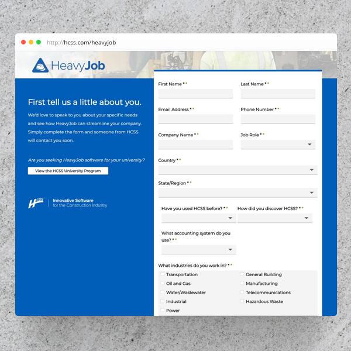
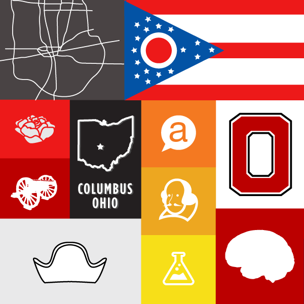
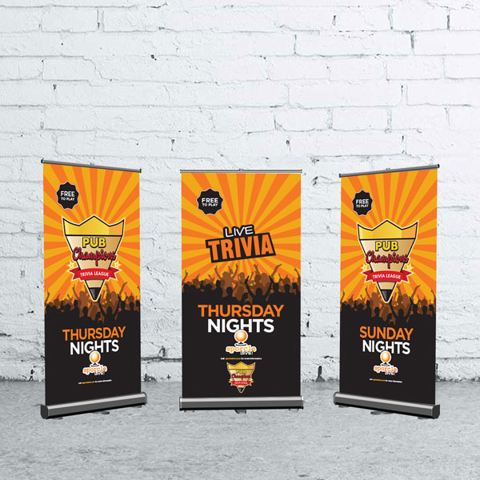
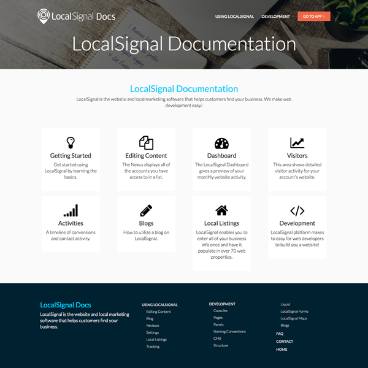
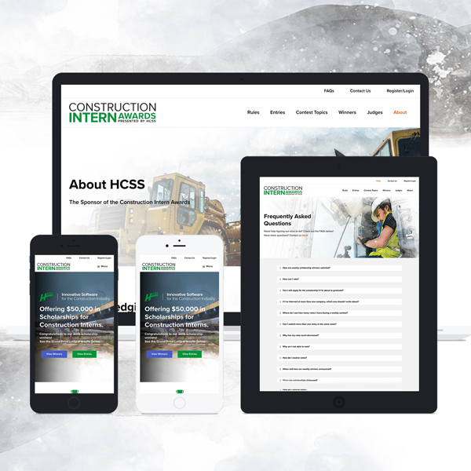
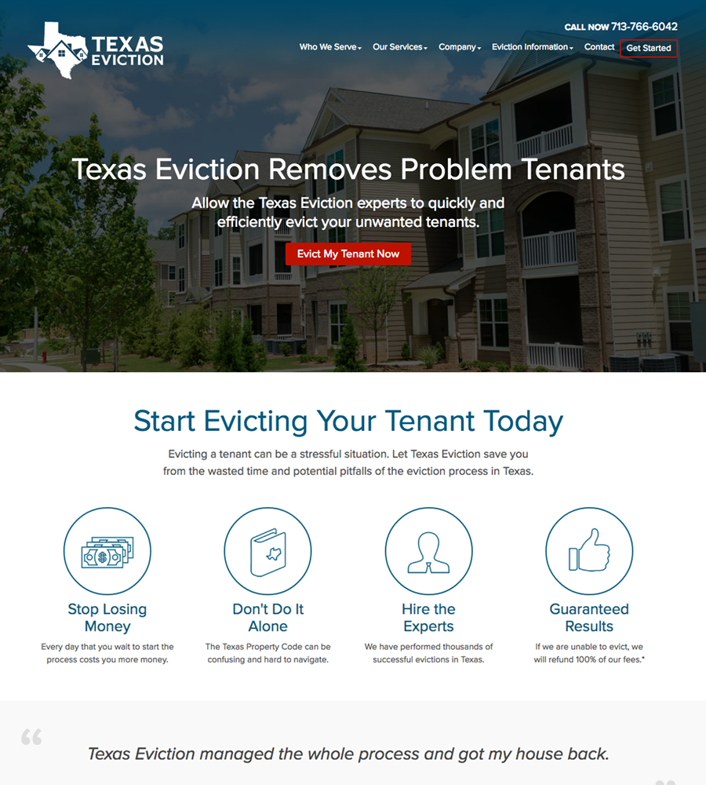
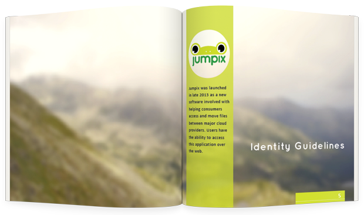

Redesigned to improve conversions, streamline UX, and ensure more accurate lead data.

Social media graphics for Sporcle Live to engage audiences and promote trivia events across multiple locations.

Branding collateral for Sporcle Live's nationwide bar and pub trivia events in the United States.

Built a developer-focused website with clear navigation, structured content, and an intuitive user experience.

Highlight scholarship winners and increase engagement year over year.

A responsive website that guides users through eviction-related processes with clear content and adaptive forms.

Established a bold, playful identity with clear logo and color guidelines for consistent application.
